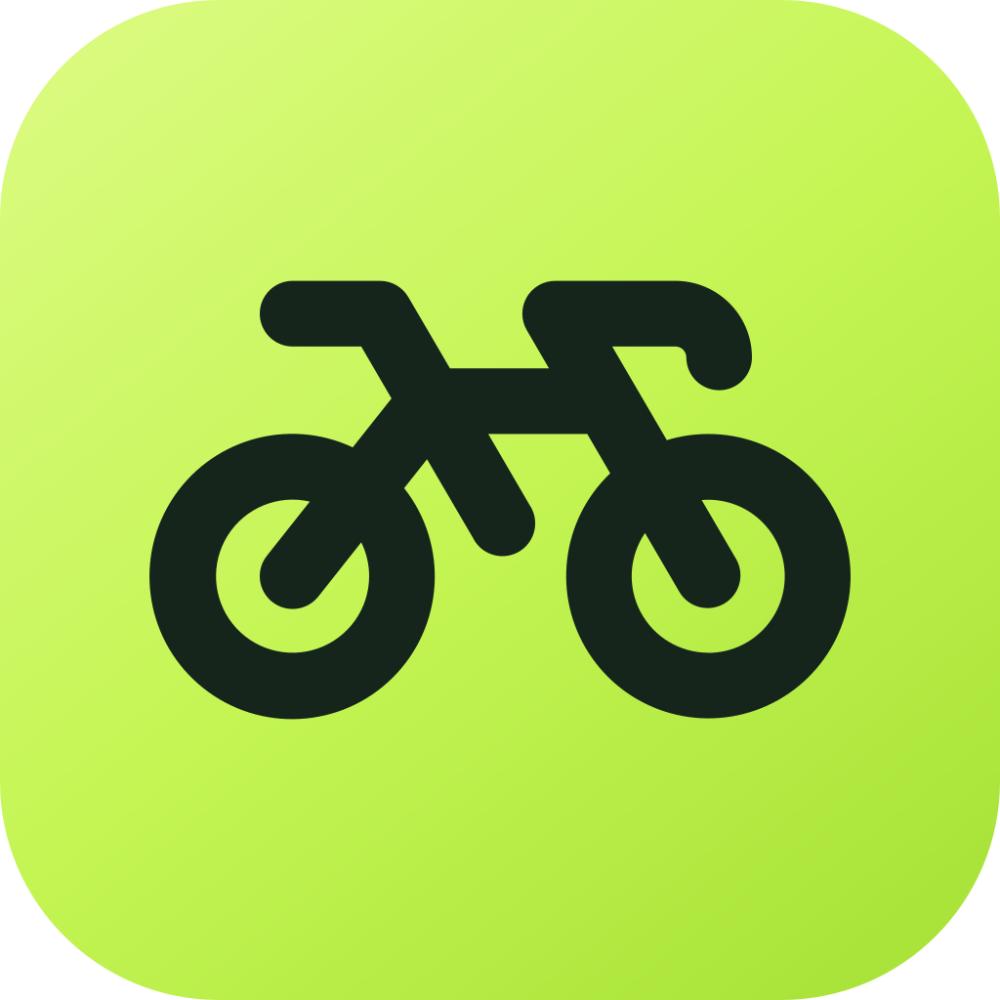
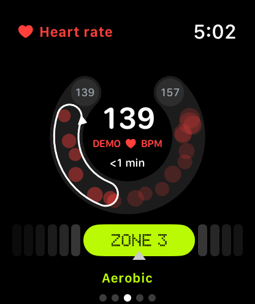
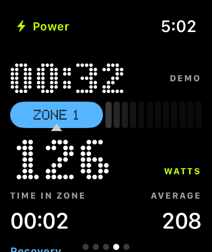
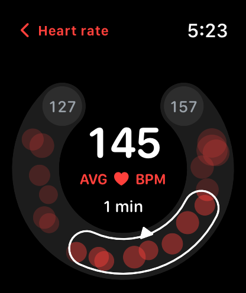
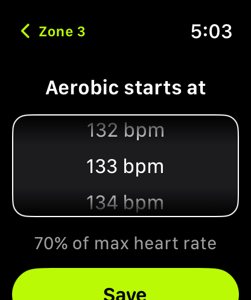

Heart rate, in context.
Where you are, where you’ve been, and how long you’ve been at it.

BikeTrackIndoor training for Apple Watch
Your bike’s power and your Watch’s heart rate, together and live on your wrist.

Typical defaults out of the box. Tune any boundary to your own max heart rate and FTP.
Example zones for a 190 bpm max heart rate. Use the arrow keys or tap a zone.
Where you are, where you’ve been, and how long you’ve been at it.

Watts from your bike, zoned against your FTP.

Averages, zones and charts, saved to Apple Health.

Sensible defaults. Adjust any boundary in seconds.
Works with Bluetooth FTMS bikes and treadmills, Cycling Power, and Cycling Speed & Cadence equipment on watchOS 11 or later. Available readings depend on your equipment. Setup help